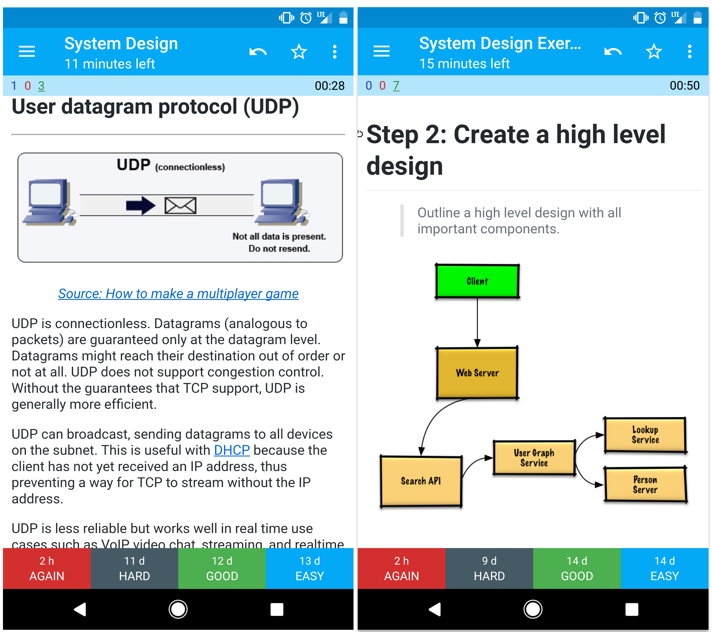
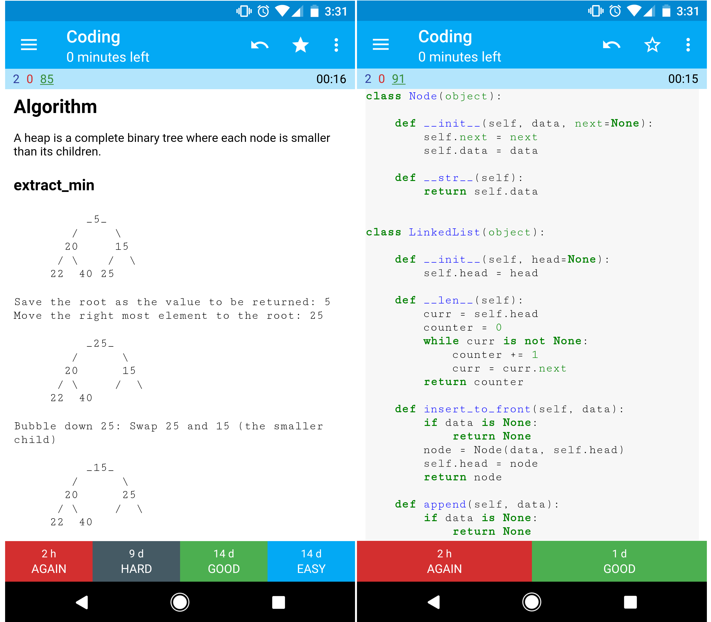
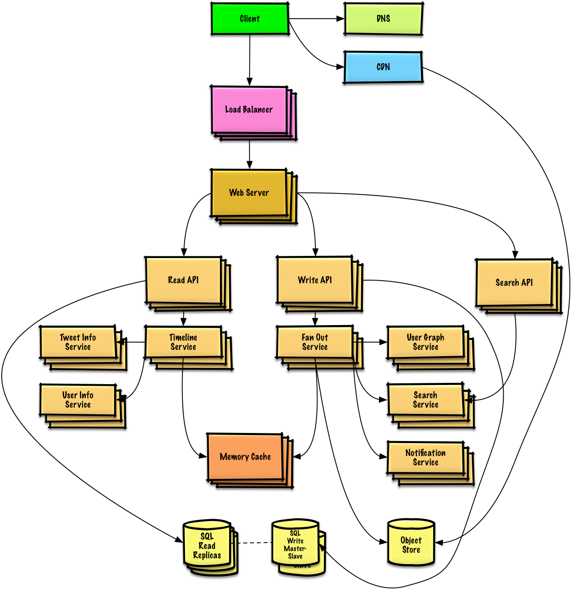
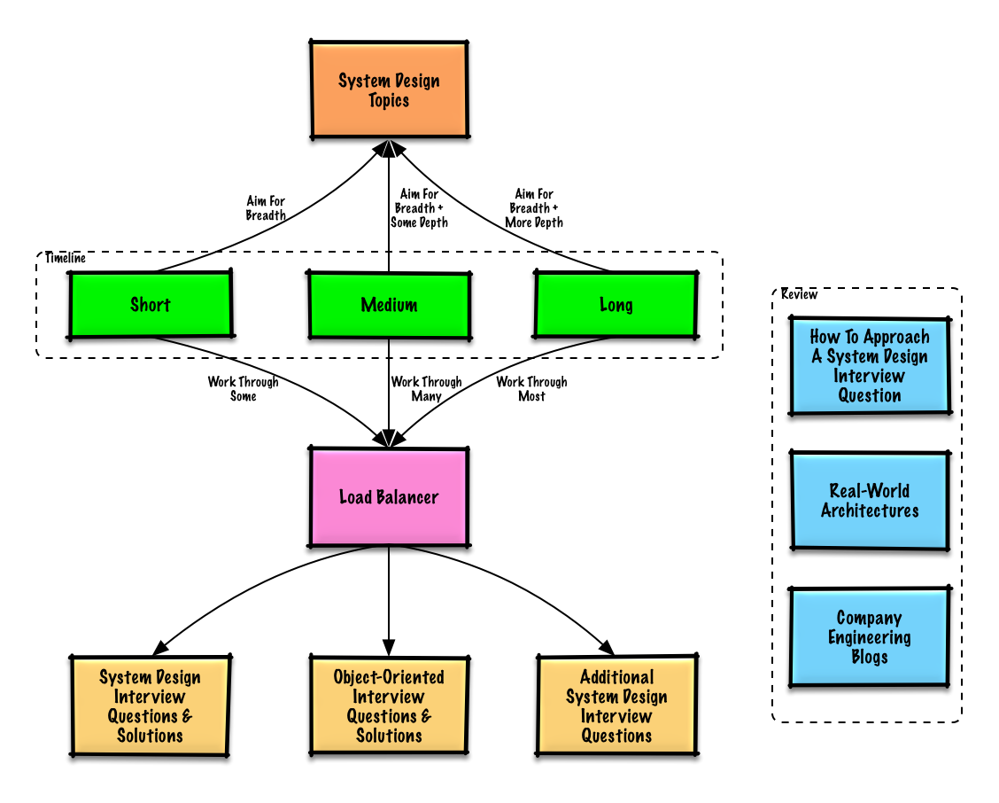

Motivation
> Learn how to design large-scale systems.
>
> Prep for the system design interview.
Learn how to design large-scale systems
Learning how to design scalable systems will help you become a better engineer.
System design is a broad topic. There are a vast number of resources scattered throughout the web on system design principles.
This repo is an organized collection of resources to help you learn how to build systems at scale.
Learn from the open source community
This is a continually updated, open source project.
Contributions are welcome!
Prep for the system design interview
In addition to coding interviews, system design is a required component of the technical interview process at many tech companies.
Practice common system design interview questions and compare your results with sample solutions: discussions, code, and diagrams.
Additional topics for interview prep:
Study guide
How to approach a system design interview question
System design interview questions, with solutions
Object-oriented design interview questions, with solutions
* Additional system design interview questions
Anki flashcards

The provided Anki flashcard decks use spaced repetition to help you retain key system design concepts.
System design deck
System design exercises deck
Object oriented design exercises deck
Great for use while on-the-go.
Coding Resource: Interactive Coding Challenges
Looking for resources to help you prep for the Coding Interview?

Check out the sister repo Interactive Coding Challenges, which contains an additional Anki deck:
Contributing
> Learn from the community.
Feel free to submit pull requests to help:
Fix errors
Improve sections
Add new sections
Translate
Content that needs some polishing is placed under development.
Review the Contributing Guidelines.
Index of system design topics
> Summaries of various system design topics, including pros and cons. Everything is a trade-off.
>
> Each section contains links to more in-depth resources.

System design topics: start here
Step 1: Review the scalability video lecture
Step 2: Review the scalability article
Next steps
Performance vs scalability
Latency vs throughput
Availability vs consistency
CAP theorem
CP - consistency and partition tolerance
AP - availability and partition tolerance
Consistency patterns
Weak consistency
Eventual consistency
Strong consistency
Availability patterns
Fail-over
Replication
Availability in numbers
Domain name system
Content delivery network
Push CDNs
Pull CDNs
Load balancer
Active-passive
Active-active
Layer 4 load balancing
Layer 7 load balancing
Horizontal scaling
Reverse proxy (web server)
Load balancer vs reverse proxy
Application layer
Microservices
Service discovery
Database
Relational database management system (RDBMS)
Master-slave replication
Master-master replication
Federation
Sharding
Denormalization
SQL tuning
NoSQL
Key-value store
Document store
Wide column store
Graph Database
SQL or NoSQL
Cache
Client caching
CDN caching
Web server caching
Database caching
Application caching
Caching at the database query level
Caching at the object level
When to update the cache
Cache-aside
Write-through
Write-behind (write-back)
Refresh-ahead
Asynchronism
Message queues
Task queues
Back pressure
Communication
Transmission control protocol (TCP)
User datagram protocol (UDP)
Remote procedure call (RPC)
Representational state transfer (REST)
Security
Appendix
Powers of two table
Latency numbers every programmer should know
Additional system design interview questions
Real world architectures
Company architectures
Company engineering blogs
Under development
Credits
Contact info
* License
Study guide
> Suggested topics to review based on your interview timeline (short, medium, long).

Q: For interviews, do I need to know everything here?
A: No, you don't need to know everything here to prepare for the interview.
What you are asked in an interview depends on variables such as:
How much experience you have
What your technical background is
What positions you are interviewing for
Which companies you are interviewing with
Luck
More experienced candidates are generally expected to know more about system design. Architects or team leads might be expected to know more than individual contributors. Top tech companies are likely to have one or more design interview rounds.
Start broad and go deeper in a few areas. It helps to know a little about various key system design topics. Adjust the following guide based on your timeline, experience, what positions you are interviewing for, and which companies you are interviewing with.
Short timeline - Aim for breadth with system design topics. Practice by solving some interview questions.
Medium timeline - Aim for breadth and some depth with system design topics. Practice by solving many interview questions.
Long timeline - Aim for breadth and more depth with system design topics. Practice by solving most interview questions.
| | Short | Medium | Long |
|---|---|---|---|
| Read through the System design topics to get a broad understanding of how systems work | :+1: | :+1: | :+1: |
| Read through a few articles in the Company engineering blogs for the companies you are interviewing with | :+1: | :+1: | :+1: |
| Read through a few Real world architectures | :+1: | :+1: | :+1: |
| Review How to approach a system design interview question | :+1: | :+1: | :+1: |
| Work through System design interview questions with solutions | Some | Many | Most |
| Work through Object-oriented design interview questions with solutions | Some | Many | Most |
| Review Additional system design interview questions | Some | Many | Most |
How to approach a system design interview question
> How to tackle a system design interview question.
The system design interview is an open-ended conversation. You are expected to lead it.
You can use the following steps to guide the discussion. To help solidify this process, work through the System design interview questions with solutions section using the following steps.
Step 1: Outline use cases, constraints, and assumptions
Gather requirements and scope the problem. Ask questions to clarify use cases and constraints. Discuss assumptions.
Who is going to use it?
How are they going to use it?
How many users are there?
What does the system do?
What are the inputs and outputs of the system?
How much data do we expect to handle?
How many requests per second do we expect?
What is the expected read to write ratio?
Step 2: Create a high level design
Outline a high level design with all important components.
Sketch the main components and connections
Justify your ideas
Step 3: Design core components
Dive into details for each core component. For example, if you were asked to design a url shortening service, discuss:
Generating and storing a hash of the full url
MD5 and Base62
Hash collisions
SQL or NoSQL
Database schema
Translating a hashed url to the full url
Database lookup
API and object-oriented design
Step 4: Scale the design
Identify and address bottlenecks, given the constraints. For example, do you need the following to address scalability issues?
Load balancer
Horizontal scaling
Caching
Database sharding
Discuss potential solutions and trade-offs. Everything is a trade-off. Address bottlenecks using principles of scalable system design.
Back-of-the-envelope calculations
You might be asked to do some estimates by hand. Refer to the Appendix for the following resources:
Use back of the envelope calculations
Powers of two table
Latency numbers every programmer should know
Source(s) and further reading
Check out the following links to get a better idea of what to expect:
How to ace a systems design interview
The system design interview
Intro to Architecture and Systems Design Interviews
* System design template
System design topics: start here
New to system design?
First, you'll need a basic understanding of common principles, learning about what they are, how they are used, and their pros and cons.
Step 1: Review the scalability video lecture
Scalability Lecture at Harvard
Topics covered:
Vertical scaling
Horizontal scaling
Caching
Load balancing
Database replication
Database partitioning
Step 2: Review the scalability article
Topics covered:
Clones
Databases
Caches
Asynchronism
Next steps
Next, we'll look at high-level trade-offs:
Performance vs scalability
Latency vs throughput
* Availability vs consistency
Keep in mind that everything is a trade-off.
Then we'll dive into more specific topics such as DNS, CDNs, and load balancers.
Performance vs scalability
A service is scalable if it results in increased performance in a manner proportional to resources added. Generally, increasing performance means serving more units of work, but it can also be to handle larger units of work, such as when datasets grow.1
Another way to look at performance vs scalability:
If you have a performance problem, your system is slow for a single user.
If you have a scalability problem, your system is fast for a single user but slow under heavy load.
Source(s) and further reading
A word on scalability
Scalability, availability, stability, patterns
Latency vs throughput
Latency is the time to perform some action or to produce some result.
Throughput is the number of such actions or results per unit of time.
Generally, you should aim for maximal throughput with acceptable latency.
Source(s) and further reading
Availability vs consistency
CAP theorem

In a distributed computer system, you can only support two of the following guarantees:
Consistency - Every read receives the most recent write or an error
Availability - Every request receives a response, without guarantee that it contains the most recent version of the information
Partition Tolerance - The system continues to operate despite arbitrary partitioning due to network failures
Networks aren't reliable, so you'll need to support partition tolerance. You'll need to make a software tradeoff between consistency and availability.
CP - consistency and partition tolerance
Waiting for a response from the partitioned node might result in a timeout error. CP is a good choice if your business needs require atomic reads and writes.
AP - availability and partition tolerance
Responses return the most readily available version of the data available on any node, which might not be the latest. Writes might take some time to propagate when the partition is resolved.
AP is a good choice if the business needs to allow for eventual consistency or when the system needs to continue working despite external errors.
Source(s) and further reading
CAP theorem revisited
A plain english introduction to CAP theorem
CAP FAQ
* The CAP theorem
Consistency patterns
With multiple copies of the same data, we are faced with options on how to synchronize them so clients have a consistent view of the data. Recall the definition of consistency from the CAP theorem - Every read receives the most recent write or an error.
Weak consistency
After a write, reads may or may not see it. A best effort approach is taken.
This approach is seen in systems such as memcached. Weak consistency works well in real time use cases such as VoIP, video chat, and realtime multiplayer games. For example, if you are on a phone call and lose reception for a few seconds, when you regain connection you do not hear what was spoken during connection loss.
Eventual consistency
After a write, reads will eventually see it (typically within milliseconds). Data is replicated asynchronously.
This approach is seen in systems such as DNS and email. Eventual consistency works well in highly available systems.
Strong consistency
After a write, reads will see it. Data is replicated synchronously.
This approach is seen in file systems and RDBMSes. Strong consistency works well in systems that need transactions.
Source(s) and further reading
Availability patterns
There are two complementary patterns to support high availability: fail-over and replication.
Fail-over
Active-passive
With active-passive fail-over, heartbeats are sent between the active and the passive server on standby. If the heartbeat is interrupted, the passive server takes over the active's IP address and resumes service.
The length of downtime is determined by whether the passive server is already running in 'hot' standby or whether it needs to start up from 'cold' standby. Only the active server handles traffic.
Active-passive failover can also be referred to as master-slave failover.
Active-active
In active-active, both servers are managing traffic, spreading the load between them.
If the servers are public-facing, the DNS would need to know about the public IPs of both servers. If the servers are internal-facing, application logic would need to know about both servers.
Active-active failover can also be referred to as master-master failover.
Disadvantage(s): failover
Fail-over adds more hardware and additional complexity.
There is a potential for loss of data if the active system fails before any newly written data can be replicated to the passive.
Replication
Master-slave and master-master
This topic is further discussed in the Database section:
Master-slave replication
Master-master replication
Availability in numbers
Availability is often quantified by uptime (or downtime) as a percentage of time the service is available. Availability is generally measured in number of 9s--a service with 99.99% availability is described as having four 9s.
99.9% availability - three 9s
| Duration | Acceptable downtime|
|---------------------|--------------------|
| Downtime per year | 8h 45min 57s |
| Downtime per month | 43m 49.7s |
| Downtime per week | 10m 4.8s |
| Downtime per day | 1m 26.4s |
99.99% availability - four 9s
| Duration | Acceptable downtime|
|---------------------|--------------------|
| Downtime per year | 52min 35.7s |
| Downtime per month | 4m 23s |
| Downtime per week | 1m 5s |
| Downtime per day | 8.6s |
Availability in parallel vs in sequence
If a service consists of multiple components prone to failure, the service's overall availability depends on whether the components are in sequence or in parallel.
###### In sequence
Overall availability decreases when two components with availability < 100% are in sequence:
Availability (Total) = Availability (Foo) Availability (Bar)If both Foo and Bar each had 99.9% availability, their total availability in sequence would be 99.8%.
###### In parallel
Overall availability increases when two components with availability < 100% are in parallel:
Availability (Total) = 1 - (1 - Availability (Foo)) (1 - Availability (Bar))If both Foo and Bar each had 99.9% availability, their total availability in parallel would be 99.9999%.
Under development
Interested in adding a section or helping complete one in-progress? Contribute!
Distributed computing with MapReduce
Consistent hashing
Scatter gather
Contribute
Credits
Credits and sources are provided throughout this repo.
Special thanks to:
Hired in tech
Cracking the coding interview
High scalability
checkcheckzz/system-design-interview
shashank88/system_design
mmcgrana/services-engineering
System design cheat sheet
A distributed systems reading list
* Cracking the system design interview
Contact info
Feel free to contact me to discuss any issues, questions, or comments.
My contact info can be found on my GitHub page.
License
I am providing code and resources in this repository to you under an open source license. Because this is my personal repository, the license you receive to my code and resources is from me and not my employer (Facebook).
Copyright 2017 Donne Martin
Creative Commons Attribution 4.0 International License (CC BY 4.0)
http://creativecommons.org/licenses/by/4.0/